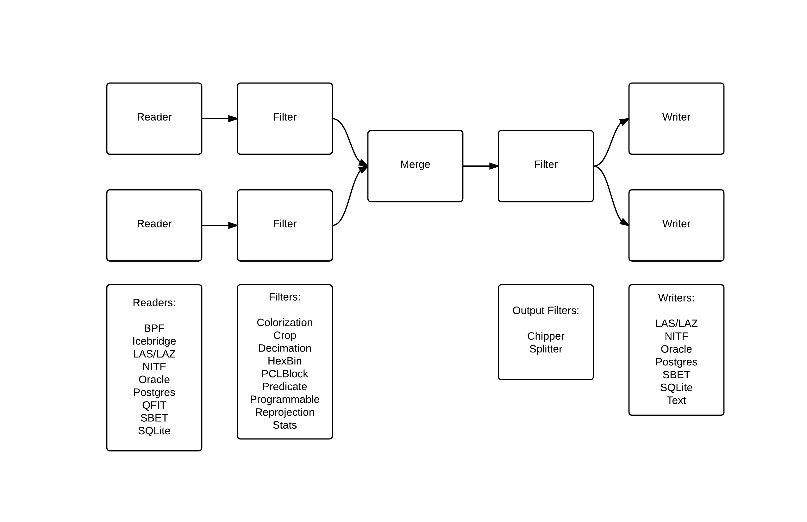

| Author: | Andrew Bell |
|---|---|
| Contact: | andrew@hobu.co |
| Date: | 9/3/2014 |
PDAL is a set of applications and library to facilitate translation of point cloud data between various formats. In addition, it provides some facilities for transformation of data between various geometric projections and manipulations and can calculate some statistical, boundary and density data. PDAL provides an API that can be used by programmers for integration into their own projects or to allow extension of existing capabilities.
PDAL reads data from a set of input sources using format-specific readers. Point data can be passed through various filters that transform data or create metadata. If desired, points can be written to an output stream using a format-specific writer. PDAL can merge data from various input sources into a single output source, preserving attribute data where supported by the input and output formats.
The above diagram shows a possible arrangement of PDAL readers, filters and writers, all of which are known as stages. Any merge operation or filter may be placed after any reader. Output filters are distinct from other filters only in that they may create more than one set of points to be further filtered or written. The arrangement of readers, filters and writers is called a PDAL pipeline. Pipelines can be specified using XML as detailed later.
PDAL is simple to extend by implementing subclasses of existing stages. All processing in PDAL is completely synchronous. No parallel processing occurs, eliminating locking or other concurrency issues. Understanding of several auxiliary classes is necessary to effectively create a new stage.
Point cloud formats support various data elements. In order to be useful, all formats must provide some notion of location for points (X, Y and perhaps Z), but beyond that, the data collected in formats may or may not have common data fields. Some formats predefine the elements that make up a point. Other formats provide this information in a header or preamble. PDAL calls each of the elements that make up a point a dimension. PDAL predefines the dimensions that are in common use by the formats that it currently supports. Readers may register their use of a predefined dimension or may have PDAL create a dimension with a name and type as requested. Dimensions are described by the enumeration pdal::Dimension::Id::Enum and associated functions in Dimension.hpp.
PDAL has a default type (Double, Float, Signed32, etc.) for each of its predefined dimensions which is believed to be sufficient to accurately hold the necessary data. Only when the default data type is deemed insufficient should a request be made to “upgrade” a storage datatype. There is no facility to “downsize” a dimension type to save memory. Dimension.hpp can be examined to determine the default storage type of each predefined dimension. In most cases knowledge of the storage data type for a dimension isn’t required. PDAL properly converts data to and from the internal storage type transparently. Invalid conversion raise an exception.
When a storage type is explicitly requested for a dimension, PDAL examines the existing storage type and requested type and chooses the storage type so that it can hold both types. In some cases this results in a storage type different from either the existing or requested storage type. For instance, if the current storage type is a 16 bit signed integer (Signed16) and the requested type is a 16 bit unsigned integer (Unsigned16), PDAL will use a 32 bit signed integer as the storage type for the dimension so that both 16 bit storage types can be successfully accommodated.
PDAL stores points in what is called a point context (PointContext object). All points in a single point context have the same dimensions and all operations on a PDAL pipeline make use of a single point context. In addition to storing points, a point context also stores pipeline metadata that may get created as pipeline stages are executed. Most functions receive a PointContextRef object, which refers to the active point context. A PointContextRef can be stored or copied cheaply.
A point buffer (PointBuffer object) stores references to points. All storage and retrieval of points is done through a point buffer rather than directly through a point context. Point data is accessed from a point buffer through a point ID (type PointId), which is an integer value. The first point reference in a point buffer has a point ID of 0, the second has a point ID of 1, the third has a point ID of 2 and so on. There are no null point references in a point buffer. The size of a point buffer is the number of point references contained in the buffer. A point buffer acts like a self-expanding array or vector of point references, but it is always full. For example, one can’t set the field value of point with a PointId of 9 unless there already exist at least 8 point references in the point buffer.
Point references can be copied from one point buffer to another by appending an existing reference to a destination point buffer. The point ID of the appended point in the destination buffer may be different than the point ID of the same point in the source buffer. The point ID of an appended point reference is the same as the size of the point buffer after the operation. Note that appending a point reference does not create a new point, rather, it creates another reference to an existing point. There are currently no built-in facilities for creating copies of points.
All stages (Stage object) share a common interface, though readers, filters and writers each have a simplified interface if the generic stage interface is more complex than necessary. One should create a new stage by creating a subclass of reader (Reader object), filter (Filter or MultiFilter object) or writer (Writer object). When a pipeline is created, each stage is created using its default constructor.
Each stage class should invoke two or three public macros to allow the stage to be hooked into the PDAL infrastructure:
SET_STAGE_NAME(<name>, <description>)
name: A character array (string) constant that will be used to reference the stage from the command line. Typically, readers are named “readers.<something>”, filters are “filters.<something>” and writers are ”writers.<something>”.
description: A character array (string) constant that may be more meaningful than the name. It appears in some debug and informational output.
SET_STAGE_LINK(<http_link>) [optional]:
http_link: A character array (string) constant that references a web site containing documentation about the stage. It allows the information to be integrated into PDAL’s web site and user information.
SET_STAGE_ENABLED(<enabled>)
enabled: A boolean (the constant ‘true’ or ‘false’) that indicates whether the stage is runnable as part of a PDAL build. Some stages are not runnable if certain prerequisite libraries and systems were not available at the time that PDAL was built. If this is the case, this macro will normally appear twice:
#ifdef HAVE_LIBRARY SET_STAGE_ENABLED(true) #else SET_STAGE_ENABLED(false) #endif
When a pipeline is started, each of its stages is processed in two distinct steps. First, all stages are prepared.
Preparation of a stage consists of executing the following private virtual functions calls, none of which need to be implemented in a stage unless desired. Each stage is guaranteed to be prepared after all stages that precede it in the pipeline.
void processOptions(const Options& options)
PDAL allows users to specify various options at the command line and in pipeline files. Those options relevant to a stage are passed to the stage during preparation through this method. This method should extract any necessary data from the options and set data in member variables or perform other configuration as necessary. It is not recommended that options passed into this function be copied, as they may become non-copyable in a future version of the library. Handling all option processing at this point also allows an exception to be thrown in the case of an invalid option that can be properly interpreted by the pipeline.
void initialize()
Some stages, particularly readers, may need to do things such as open files to extract header information before the next step in processing. Other general processing that needs to take place before any stage is executed should occur at this time. Initialization that can be deferred until the execution stage should be performed in the ready() method (see below).
void addDimensions(PointContextRef ctx)
This method allows stages to inform a point context of the dimensions that it would like as part of the record of each point. Normally, only readers add dimensions to a point context, but there is no prohibition on filters or writers from adding dimensions if necessary. Dimensions should not be added to a pipeline’s point context except in this method.
After all stages are prepared, processing continues with the execution of each stage. Each stage will be executed only after all stages preceding it in a pipeline have been executed. A stage is executed by invoking the following private virtual methods. It is important to note that ready() and done() are called only once for each stage while run() is called once for each point buffer to be processed by the stage.
void ready(PointContextRef ctx)
This function allows preprocessing to be performed prior to actual processing of the points in a point buffer. For example, filters may initialize internal data structures or libraries, readers may connect to databases and writers may write a file header. If there is a choice between performing operations in the preparation stage (in the initialize() method) or the execution stage (in ready()), prefer to defer the operation until this point.
PointBufferSet run(PointBufferPtr buf)
This is the method in which processing of individual points occurs. One might read points into the buffer, transform point values in some way, or distribute the point references in the input buffer into numerous output buffers. This method is called once for each point buffer passed to the stage.
void done(PointContextRef ctx)
This function allows a stage to clean up resources not released by a stage’s destructor. It also allows other termination functions, such a closing of databases, writing file footers, rewriting headers or closing or renaming files.
A reader is a stage that takes input from a point clould format supported by PDAL and loads points into a point context through a point buffer.
A reader needs to register or assign those dimensions that it will reference when adding point data to the point context. Dimensions that are predefined in PDAL can be registered by using the point context’s registerDim() method. Dimensions that are not predefined can be added using assignDim(). If dimensions are determined as named entities from a point cloud source, it may not be known whether the dimensions are predefined or not. In this case the function registerOrAssignDim() can be used. When a dimension is assigned, rather than registered, the reader needs to inform PDAL of the type of the variable using the enumeration Dimension::Type::Enum.
In this example, the reader informs the point context that it will reference the dimensions X, Y and Z.
void Reader::addDimensions(PointContextRef ctx) { ctx.registerDim(Dimension::Id::X); ctx.registerDim(Dimension::Id::Y); ctx.registerDim(Dimension::Id::Z); }
Here a reader determines dimensions from an input source and registers or assigns them. All of the input dimension values are in this case double precision floating point.
void Reader::addDimensions(PointContextRef ctx)
{
FileHeader header;
for (auto di = header.names.begin(), di != header.names.end(); ++di)
{
std::string dimName = *di;
Dimension::Id::Enum id = ctx.registerOrAssignDim(dimName,
Dimension::Type::Double);
}
}
Readers should use the ready() function to reset the input data to a state where the first point can be read from the source. The done() function should be used to free resources or reset the state initialized in ready().
Readers should implement a function, read(), that will place the data from the input source into the provided point buffer:
point_count_t read(PointBuffer& buf, point_count_t count)
The reader should read at most ‘count’ points from the input source and place them in buffer ‘buf’. The reader must keep track of its current position in the input source and points should be read until no points remain or ‘count’ points have been added to the buffer. The current location in the input source is typically tracked with a integer variable called the index.
As each point is read from the input source, it must be placed at the end of the point buffer. The ID of the end of the point buffer can be determined by calling size() function of the point buffer. read() should return the number of points read by during the function call.
point_count_t MyFormat::read(PointBuffer& buf, point_count_t count) { // Determine the number of points remaining in the input. point_count_t remainingInput = m_totalNumPts - m_index; // Determine the number of points to read. count = std::min(count, remainingInput); // Determine the ID of the next point in the point buffer PointId nextId = buf.size(); // Determine the current input position. auto pos = m_pointSize * m_index; point_count_t remaining = count; while (remaining--) { double x, y, z; // Read X, Y and from input source. x = m_file.read<double>(pos); pos += sizeof(double); y = m_file.read<double>(pos); pos += sizeof(double); z = m_file.read<double>(pos); pos += sizeof(double); // Set X, Y and Z into the pointBuffer. buf.setField(Dimension::Id::X, nextId, x); buf.setField(Dimension::Id::Y, nextId, y); buf.setField(Dimension::Id::Z, nextId, z); nextId++; } m_index += count; return count; }Note that we don’t read more points than requested, we don’t read past the end of the input stream and we keep track of our location in the input so that subsequent calls to read() will result in all points being read.
A filter is a stage that allows processing of data after it has been read into a pipeline’s point context. In many filters, the only function that need be implemented is filter(), a simplified version of the stage’s run() method whose input and output is a point buffer provided by the previous stage:
void filter(PointBuffer& buf)
One should implement filter() instead of run() if its interface is sufficient. The expectation is that a filter will iterate through the points currently in the point buffer and apply some transformation or gather some data to be output as pipeline metadata.
Here as an example is the actual filter function from the reprojection filter:
void Reprojection::filter(PointBuffer& data) { for (PointId id = 0; id < data.size(); ++id) { double x = data.getFieldAs<double>(Dimension::Id::X, id); double y = data.getFieldAs<double>(Dimension::Id::Y, id); double z = data.getFieldAs<double>(Dimension::Id::Z, id); transform(x, y, z); data.setField(Dimension::Id::X, id, x); data.setField(Dimension::Id::Y, id, y); data.setField(Dimension::Id::Z, id, z); } }The filter simply loops through the points, retrieving the X, Y and Z values of each point, transforms those value using a reprojection algorithm and then stores the transformed values in the point context using the point buffer’s setField() function.
A filter may need to use the run() function instead of filter(), typically because it needs to create multiple output point buffers from a single input buffer. The following example puts every other input point into one of two output point buffers:
PointBufferSet Alternator::run(PointBufferPtr buf) { PointBufferSet pbSet; PointBufferPtr even = buf->makeNew(); PointBufferPtr odd = buf->makeNew(); pbSet.insert(even); pbSet.insert(odd); for (PointId idx = 0; idx < buf->size(); ++idx) { PointBufferPtr out = idx % 2 ? even : odd; out->appendPoint(*buf, idx); } return pbSet; }
Analogous to the filter() method in a filter is the write() method of a writer. This function is usually the appropriate one to override when implementing a writer – it would be unusual to need to implement run(). A typical writer will open its output file when ready() is called, write individual points in write() and close the file in done().
Like a filter, a writer may receive multiple point buffers during processing of a pipeline. This will result in the write() function being called once for each of the input point buffers. Some current writers do not produce correct output when provided with multiple point buffers. Users should be warned use a merge filter immediately prior to such writers to avoid errors. As new writers are created, developers should try to make sure that they behave reasonably if passed multiple point buffers – they correctly handle write() being called multiple times between after a single call to ready().
void write(const PointBuffer& buf)
{
ostream& out = *m_out;
for (PointId id = 0; id < buf.size(); ++id)
{
out << setw(10) << buf.getFieldAs<double>(Dimension::Id::X, id);
out << setw(10) << buf.getFieldAs<double>(Dimension::Id::Y, id);
out << setw(10) << buf.getFieldAs<double>(Dimension::Id::Z, id);
}
}